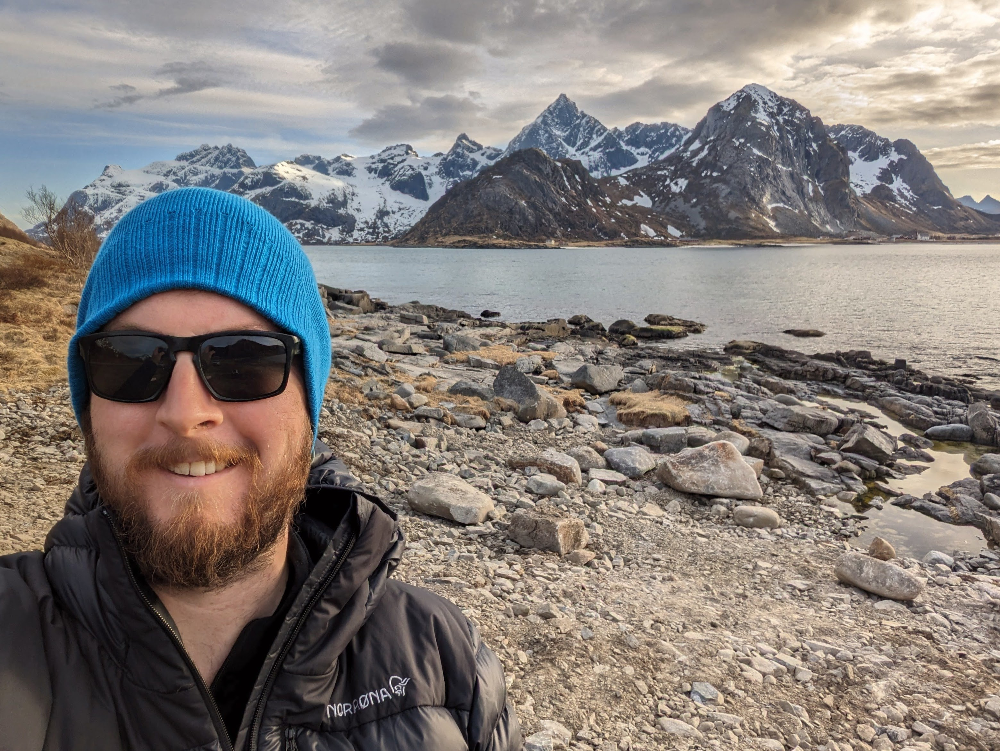
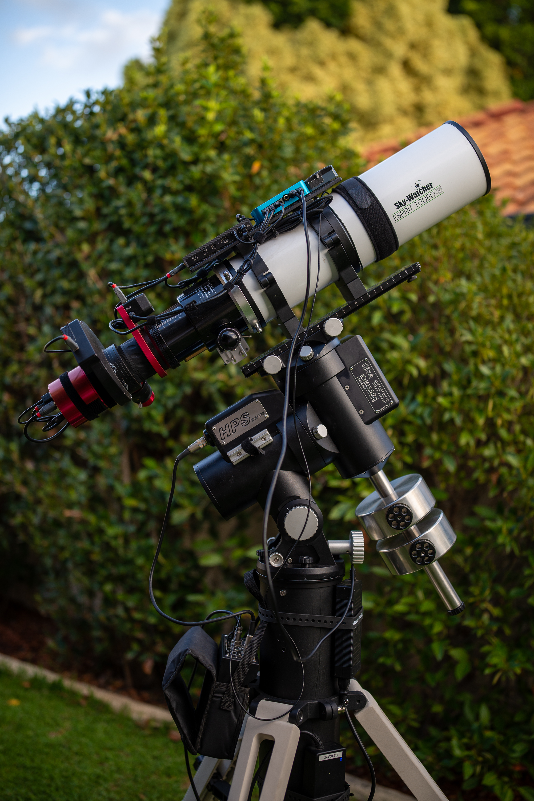

I am an astro and landscape photographer based in Perth, Western Australia, focusing on the intersection of vast landscapes and the details of the cosmos. I am fortunate enough to have easy access to some of the world's darkest skies.
Beyond the lens, I am a geologist, avid hiker, camper and traveller.
I am also an active member of the Astronomical Society of Western Australia.
My current setup is built around a 100mm imaging refractor and a premium mount, with the aim of eventually hosting it remotely under world-class dark skies.
